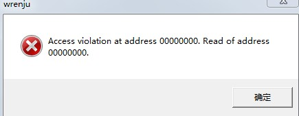

有没有win7可以使用的黑石？？？
#1 有没有win7可以使用的黑石？？？作者：黄药师 发表时间：2011-6-23 20:12:04
有没有win7可以使用的黑石？？？#2 Re:有没有win7可以使用的黑石？？？作者：屏蔽 发表时间：2011-6-23 20:39:55
有。#3 Re:有没有win7可以使用的黑石？？？作者：梧桐风 发表时间：2011-6-23 21:46:28
有,LZ的电脑用不了?
#4 Re:有没有win7可以使用的黑石？？？作者：死劲哭 发表时间：2011-6-23 22:18:18
应当和操作系统无关，和杀毒软件有关吧。反正我从XP到Vista直到现在的Win 7，一直用的杀毒软件都是Eset Nod32 黑石安装文件（包括RAR格式）下载完毕，只要一打开就直接被杀毒软件删除了。#5 Re:Re:有没有win7可以使用的黑石？？？作者：黄药师 发表时间：2011-6-23 22:34:09

杀毒软件倒是不杀，但是黑石开不了！！！！
#6 Re:有没有win7可以使用的黑石？？？作者：踵酃 发表时间：2011-6-23 22:50:13
 这个可以有，鼠标右键，用管理员身份打开。
这个可以有，鼠标右键，用管理员身份打开。
［ 潇洒 于 2011-6-24 0:14:06 时花20金币送鲜花一朵］
［ 黄药师 于 2011-6-24 8:01:55 时花20金币送鲜花一朵］
#7 Re:有没有win7可以使用的黑石？？？作者：裁决殿雪月 发表时间：2011-6-24 0:21:01
以前用的WIN7 觉得不方便就换XP了
黑石说的是绿色版还是安装版啊
#8 Re:Re:有没有win7可以使用的黑石？？？作者：黄药师 发表时间：2011-6-24 0:22:35
引用：好像没有安装过，应该是个什么汉化版！
原文由 裁决殿雪月 发表于 2011-6-24 0:21:01 :以前用的WIN7 觉得不方便就换XP了
黑石说的是绿色版还是安装版啊
#9 Re:Re:有没有win7可以使用的黑石？？？作者：极地剑客 发表时间：2011-6-24 1:00:00
引用：正解，如果你还不ok，就右键属性，选择兼容xp模式即可
原文由 踵酃 发表于 2011-6-23 22:50:13 :
［ 潇洒 于 2011-6-24 0:14:06 时花20金币送鲜花一朵］
［ 黄药师 于 2011-6-24 8:01:30 时花20金币送鲜花一朵］
#10 Re:有没有win7可以使用的黑石？？？作者：黄药师 发表时间：2011-6-24 8:02:22
楼上不要失望哟，不是mm送的鲜花！
［ 极地剑客 于 2011-6-24 14:54:10 时花20金币送鲜花一朵］
#11 Re:有没有win7可以使用的黑石？？？作者：小元 发表时间：2011-6-24 9:51:19
用免安装版的可以打开
#12 Re:有没有win7可以使用的黑石？？？作者：死劲哭 发表时间：2011-6-24 9:55:38
免安装，也就是RAR压缩文件格式的吧，我解压出来后就直接被杀毒软件隔离了。从隔离文件夹恢复后，再次被删除。解压前虽然设定为‘信任’，但解压后还是被删除
#13 Re:有没有win7可以使用的黑石？？？作者：潇洒 发表时间：2011-6-24 9:57:32
在隔离区还原一下就可以用了
［ 死劲哭 于 2011-6-24 10:04:22 时花20金币送鲜花一朵］
#14 Re:Re:有没有win7可以使用的黑石？？？作者：死劲哭 发表时间：2011-6-24 10:00:36
引用：还原后可以打开，但很快被再次删除
原文由 潇洒 发表于 2011-6-24 9:57:32 :在隔离区还原一下就可以用了
#15 Re:有没有win7可以使用的黑石？？？作者：潇洒 发表时间：2011-6-24 10:07:22
隔离区对文件设置信任，还原另存为就可以了#16 Re:有没有win7可以使用的黑石？？？作者：死劲哭 发表时间：2011-6-24 10:07:34
潇洒老师，我在‘十番棋’这的竞猜，您不要介意哦·完全是掷硬币的性质#17 Re:有没有win7可以使用的黑石？？？作者：潇洒 发表时间：2011-6-24 10:08:20
WIN7系统用右键点以管理员身份运行就可以使用了#18 Re:Re:有没有win7可以使用的黑石？？？作者：潇洒 发表时间：2011-6-24 10:09:08
引用：不介意，下着玩。
原文由 死劲哭 发表于 2011-6-24 10:07:34 :
潇洒老师，我在‘十番棋’这的竞猜，您不要介意哦·完全是掷硬币的性质
#19 Re:Re:有没有win7可以使用的黑石？？？作者：死劲哭 发表时间：2011-6-24 10:11:04
引用：所有的方法我都试过无数遍了，结果一样被删除。看来要使用黑石，我只能换杀毒软件了。
原文由 潇洒 发表于 2011-6-24 10:08:20 :
WIN7系统用右键点以管理员身份运行就可以使用了
#20 Re:Re:Re:有没有win7可以使用的黑石？？？作者：高飞 发表时间：2011-6-24 12:27:13
 从不用杀毒的
从不用杀毒的#21 Re:Re:Re:Re:有没有win7可以使用的黑石？？？作者：死劲哭 发表时间：2011-6-24 13:05:55
引用：我笔记本使用网络银行，不敢大意
原文由 高飞 发表于 2011-6-24 12:27:13 :

#22 Re:Re:Re:Re:有没有win7可以使用的黑石？？？作者：菜包先生 发表时间：2011-6-24 13:56:32
引用：你还用杀毒？你本身就是毒，二两敌敌畏估计都放不倒你
原文由 高飞 发表于 2011-6-24 12:27:13 :
#23 Re:Re:Re:Re:有没有win7可以使用的黑石？？？作者：黄药师 发表时间：2011-6-24 19:38:00
引用：传说中的裸奔哥出现！！！！！
原文由 高飞 发表于 2011-6-24 12:27:13 :